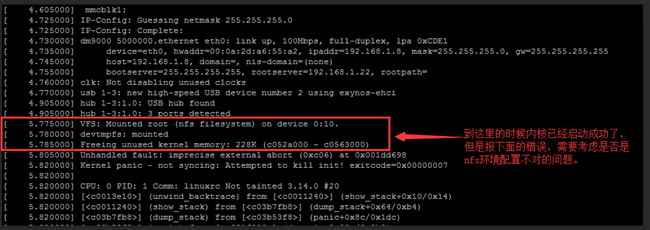
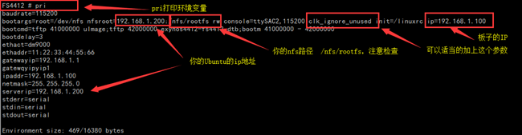
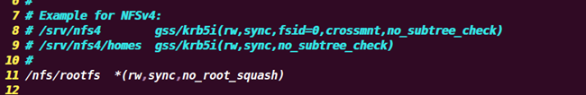

文件系统挂不上kernel panic – not syncing：Attempted to kill init！exiteade
问题描述：
如果能够执行到如下步骤，则说明内核已经成功启动了，但是随即又报下图所示的问题，那么则需要考虑是否是nfs服务器的配置问题，具体参考如下:
[ 1.810000] clk: Not disabling unused clocks
[ 3.010000] VFS: Mounted root (nfs filesystem) on device 0:10.
[ 3.015000] devtmpfs: mounted
[ 3.020000] Freeing unused kernel memory: 228K (c050d000 - c0546000)

解决方案：
1、检查环境变量

1.1、确保nfsroot 的ip地址是你Ubuntu的ip地址，在Ubuntu上可以通过ifconfig来查看是否和pri打印出的一样。
1.2、在启动参数的位置添加 clk_ignore_unused
1.3、查看rootfs的路径是否正确： 你的nfs路径可能是/source/rootfs或 /nfs/rootfs
具体的查看你的nfs配置文件: /etc/exports
sudo vi /etc/exports 课程内**的nfs配置文件信息如下，

但是老师的内核的配置和咱们的内核配置稍微有点不同，所以需要适当的修改/etc/exports文件，
添加 no_subtree_check参数，
改为如下内容； sudo vi /etc/exports (注意你的nfs路径)
1.4、如果你的Ubuntu是17.10及以上版本，需要以下设置，因为高版本Ubuntu不支持nfs 2
sudo vi /etc/default/nfs-kernel-server
RPCNFSDOPTS="--nfs-version 2,3,4 --debug --syslog"
然后重启nfs服务器和开发板，就OK了